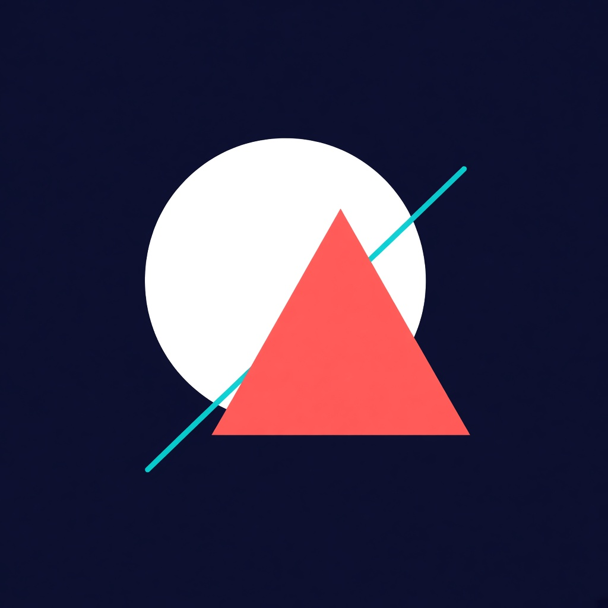

A portable animation and sound kit
Press A–Z or 0–9 · space changes the kit · turn up speakers
A generative variation of Patatap. Eight palettes, visuals, and tunings are rolled in the colors of the current season and held for five minutes, then a new set takes over.
Contains flashing images. Inspired by Patatap by jonobr1 + Lullatone.
Kinetone · after Patatap